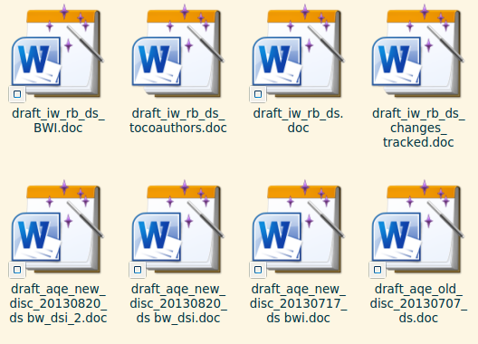
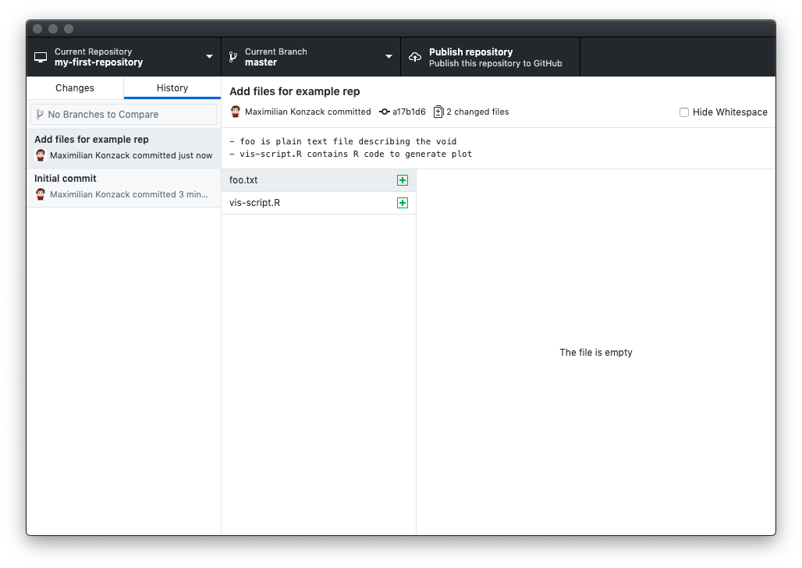
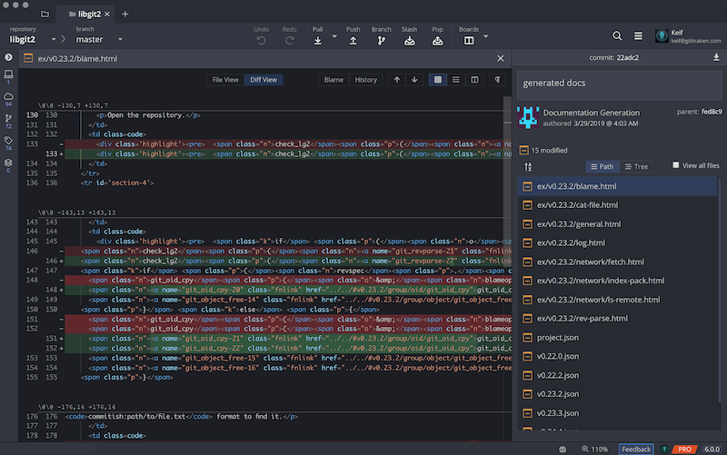
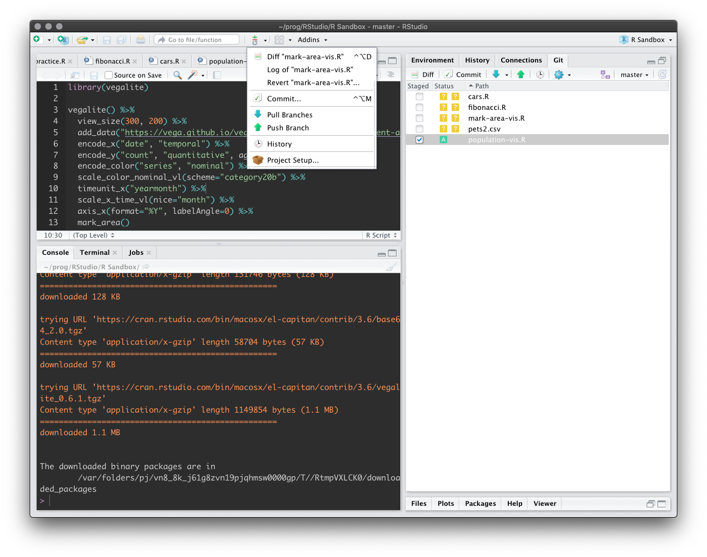
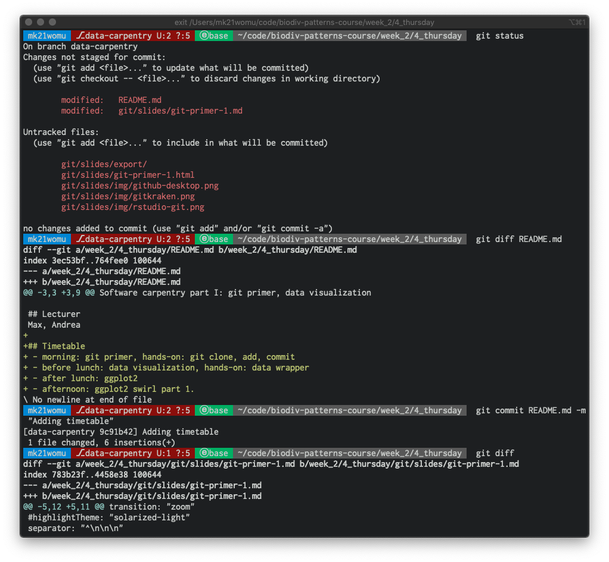

Introduction to git
Agenda
- Understanding version control
- How to use basic git commands
- Hands-on with git
- What’s to learn after that
Who has experience with version control?
- Dropbox, Nextcloud
- google drive, iCloud, OneDrive
- CVS, SVN
- git, mercurial, darcs
What is version control?
Filenames as version control

Local version control

Centralized VCS

Distributed VCS

What is VCS?
What is git?
A distributed version control system!
- work offline
- undo errors
- track content, not files
- small changes
- keep history
- working with others
- don’t panic
git in a nutshell
delta-based version control system

Stream of snapshots

Summary
git
- keeps a timeline
- handles most operations locally
- leaves unchanged files as they are
- maintains “deltas”/diffs of a changed file
- has three states that a file can have
modifiedstagedcommitted
Three stages

git primer
Install git
Setup git
# configure your identity
git config --global user.name 'Jane Doe'
git config --global user.email 'jane.doe@riot-grrrl.org'
command line
description syntax
# command
git
# sub-command
git status
# argument
git diff README.md
# every git command
git command [arguments]
# get help
git help [command]
command line
bash basics
pwd # print working directory
ls [dir] # list directory contents
echo msg # print message
cd [dir] # change directory
mkdir dir # create directory
rmdir dir # remove directory
rm file # remove file
cp src dest # copy from source to destination
mv src dest # move / rename
nano file # edit file (Linux / Mac)
notepad file # edit file (Windows)
git basic commands
# 0. Initialize the git project (stored in .git subdir).
$ git init my-first-git-project
# 1. Change the directory to the project.
$ cd my-first-git-project
# 2. Stage/add our first script.
$ git add data-viz-script.R
# 3. What is the current status of the files?
$ git status
# 4. Commit our current changes with a message.
$ git commit -m "Adding r code to visualize data"
# 5. Check the deltas/changes in the project.
$ git diff
git server
# 1. Commit your changes locally
$ git commit [fileA subDirF] -m "[Action] on ... to ..."
# 2. Pull changes from the server
$ git pull
# 3. Push your changes to the server
$ git push
Setup git server
- Clone an existing project hosted from a git server (GitHub, GitLab, Bitbucket)
$ git clone\
https://github.com/chase-lab/biodiv-patterns-course.git
- Connect your local repository to a Git server (GitHub, GitLab, Bitbucket)
$ git remote add origin\
https://github.com/komax/my-new-project.git
git clients
GitHub Desktop
GitKraken
git in RStudio
git in the shell
Advanced git skills
Branching in a nutshell
Branching

Create a branch

Commit in a branch

Git basics
Thank you for your attention
Literature
Official documentation

GitHub resources
iDiv GSU
Thank you, Dirk and Christian